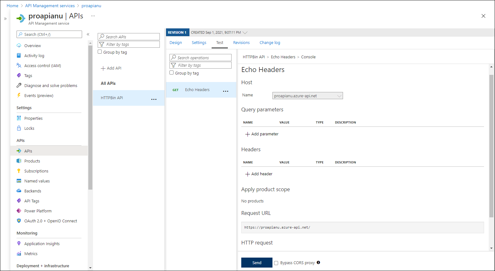

Lab 2: Build an API proxy tier by using Azure API Management
Task 1: Create an API Management resource
In the Azure portal, use the Search resources, services, and docs text box to search for API Management services and, in the list of results, select API Management services.
On the API Management services blade, select + Create.
On the Install API Management gateway blade, perform the following actions, and then select Review + create:
| Setting | Action |
| -- | -- |
| **Subscription** drop-down list | Retain the default value. |
| **Resource group** section | Select the **ApiService** group that you created earlier in the lab |
| **Region** list | Select the same region you chose in the previous exercise |
| **Resource name** text box | Enter **proapi** *[yourname]* |
| **Organization name** text box | Enter **Contoso** |
| **Administrator email** text box | Enter `admin@contoso.com` |
| **Pricing tier** drop-down list | **Consumption (99.95% SLA)** |
The following screenshot displays the configured settings of **Create API Management** blade of the web application.

On the Review + create tab, review the option that you specified in the previous step, and then select Create.
Note: Wait for the creation task to complete before you continue with this lab.
On the Deployment Overview blade, select Go to resource.
Task 2: Define a new API
On the API Management Service blade, in the APIs section, select APIs.
In the Define a new API section, select HTTP.
In the Create an HTTP API window, perform the following actions and select Create:
| Setting | Action | | -- | -- | | Display name text box | Enter HTTPBin API | | Name text box | Enter httpbin-api | | Web service URL text box | Enter the URL for the web app that you copied earlier in this lab. Note: Make sure that the URL starts with the https:// prefix | | API URL suffix text box | Leave it empty |
The following screenshot displays the configured settings of Create a blank API window of the web application.

Note: Wait for the new API to finish being created.
On the Design tab, select + Add operation.
In the Add operation section, perform the following actions, and then select Save:
| Setting | Action |
| -- | -- |
| **Display name** text box | Enter **Echo Headers** |
| **Name** text box | Verify that its value is set to **echo-headers** |
| **URL** list | Select **GET** |
| **URL** text box | Enter **/** |
The following screenshot displays the configured settings of the **Add operation** section.

Back on the Design tab, in the list of operations, select Echo Headers.
In the Design section, on the Inbound processing tile select + Add policy.
In the Add inbound policy section, select the Set headers tile.
In the Set Headers section, perform the following actions, and then select Save:
| Setting | Action | | -- | -- | | Name text box | Enter source | | Value text box | Select the list, select Add Value, and then enter azure-api-mgmt | | Action list | Select append |
The following screenshot displays the configured settings of the Design section.

Back on the Design tab, in the list of operations, select Echo Headers.
In the Design section for Echo Headers, on the Backend tile, select the pencil icon.
In the Backend section, perform the following actions, and then select Save:
| Setting | Action | | -- | -- | | Service URL section | Select the Override check box | | Service URL text box | Append the value /headers to its current value. Note: For example, if the current value is
http://httpapi[yourname].azurewebsites.net, the new value will behttp://httpapi[yourname].azurewebsites.net/headers|Back on the Design tab, in the list of operations, select Echo Headers, and then select the Test tab.
In the Echo Headers section, select Send.
The following screenshot displays the configured settings of the Echo Headers section.

Review the results of the API request.
Note: Verify that there are many headers sent as part of your request that are echoed in the response. They should include the new Source header that you created as part of this task.
The following screenshot displays the response to the Echo Headers request.

Select the Design tab to return to the list of operations.
Task 3: Manipulate an API response
On the Design tab, select + Add operation.
In the Add operation section, perform the following actions, and then select Save:
| Setting | Action | | -- | -- | | Display name text box | Enter Get Legacy Data | | Name text box | Verify that its value is set to get-legacy-data | | URL list | Verify that its value is set to GET | | URL text box | Enter /xml |
Back on the Design tab, in the list of operations, select Get Legacy Data.
Select the Test tab, and then select Send.
Review the results of the API request.
Note: At this point, the results should be in XML format.
The following screenshot displays the results of the API request.

Select the Design tab, and then select Get Legacy Data.
On the Design pane, in the Outbound processing section, select Add policy.
The following screenshot displays the Outbound processing section.

In the Add outbound policy section, select the Other policies tile.
In the policy code editor, find the following block of XML content:
<outbound> <base /> </outbound>Replace that block of XML with the following XML:
<outbound> <base /> <xml-to-json kind="direct" apply="always" consider-accept-header="false" /> </outbound>In the policy code editor, select Save.
Back on the Design tab, in the list of operations, select Get Legacy Data, and then select Test.
In the Get Legacy Data section, select Send.
Review the results of the API request.
Note: The new results are in JavaScript Object Notation (JSON) format.
Within the HTTP response section, perform the following actions:
Select Trace.
Review the content in the Backend and Outbound text boxes, and note that they include details of the corresponding API operations with their timing information.
Task 4: Manipulate an API request
On the Design tab, select + Add operation.
In the Add operation section, perform the following actions, and then select Save:
| Setting | Action | | -- | -- | | Display name text box | Enter Modify Status Code | | Name text box | Verify that its value is set to modify-status-code | | URL list | Select GET | | URL text box | Enter /status/404 |
Back on the Design tab, in the list of operations, select Modify Status Code.
In the Design section, on the Inbound processing tile, select + Add policy.
In the Add inbound policy section, select the Rewrite URL tile.
In the Rewrite URL section, perform the following actions:
a. In the Backend text box, enter /status/200.
b. Select Save.
Back on the Design tab, in the list of operations, select Modify Status Code, and then select the Test tab.
In the Modify Status Code section, select Send.
Review the results of the API request.
Note: Verify that the request returned the HTTP/1.1 200 OK response.
Review
In this exercise, you built a proxy tier between your App Service resource and any developers who wish to make queries against its API.